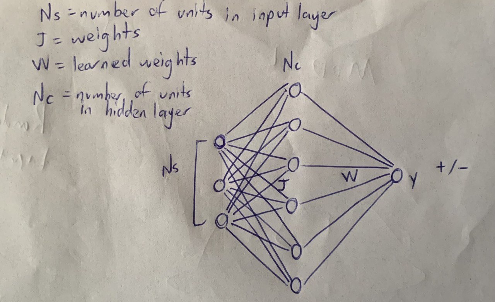
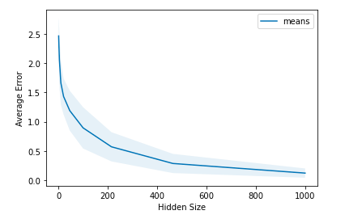

Overview
Stimuli from our external world sent into numerous sensory pathways are projected to downstream populations which are sparsely active with a higher density of neurons than arriving axons. This project seeks to explore the computational advantages of expansion and sparsity for inputs that are clustered, where various clusters correspond to behaviorally diverse stimuli and intracluster variability to sensory or neural noise. This project is inspired by a neuron article Babadi and Sompolinsky published in 2014. Through mathematical simulations and analytical calculations, they demonstrate that the feed-forward random synaptic weights used for expansion amplify the variability of incoming inputs, and that the noise amplification gets worse as the expanded representation becomes more sparse. The task which their learning algorithm was performed on was binary classification but I focus on a linear regression task to explore more ways in which expansion and sparsity can be beneficial computationally.
Result
The snippet below shows the graph obtained from the simulation.

Perceptron
The figure above shows the shematic of a perceptron showing j weight which are fixed and random, Ns indicating number of units in input layer drawn from a random normal gaussian distribution, Nc showing number of units in hidden layer, W showing learned weights and y showing output.

Expansion of Hidden Size of a Perceptron
The figure above shows how error decreases as the units of the hidden size of a perceptron expands.